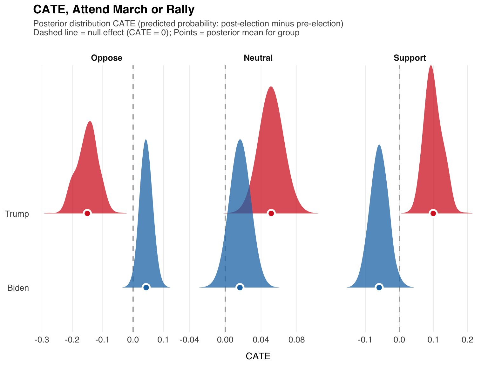
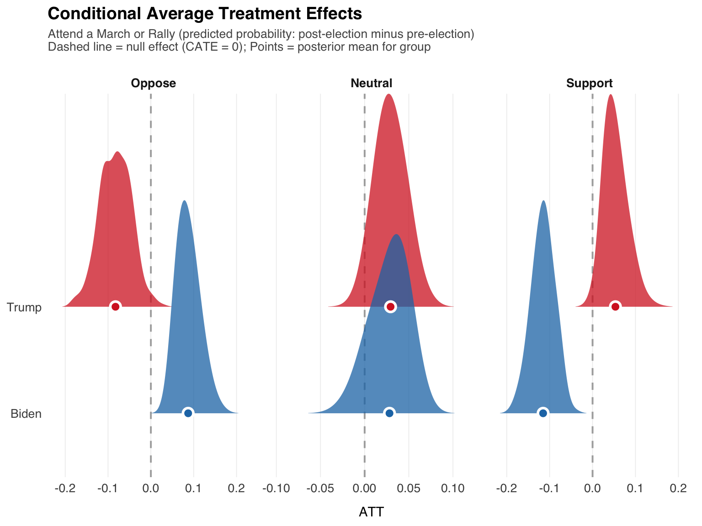
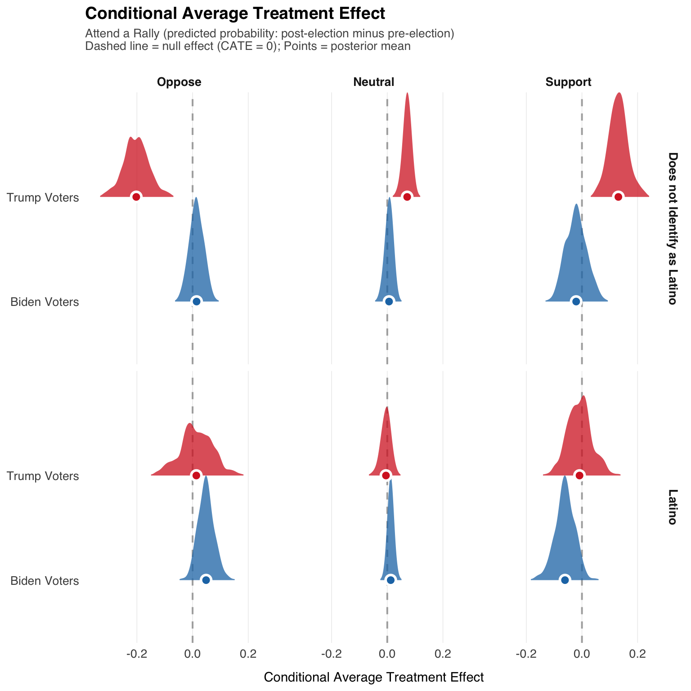
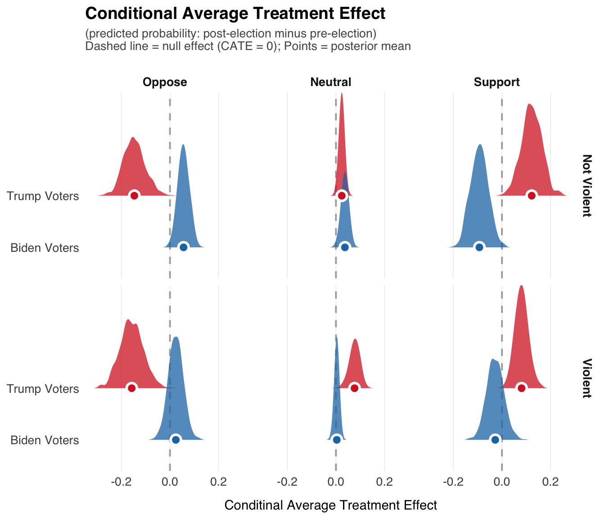
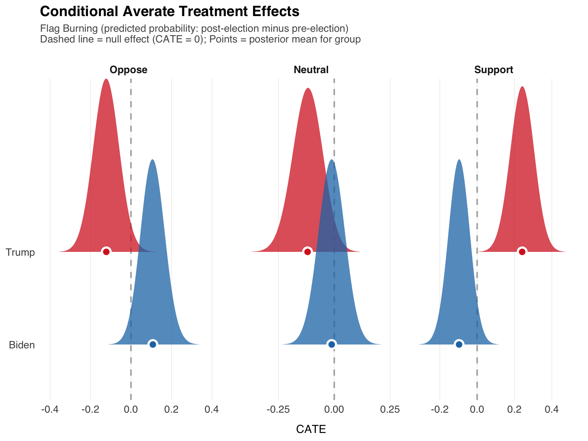
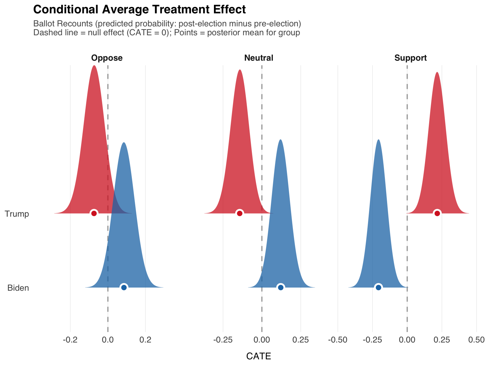
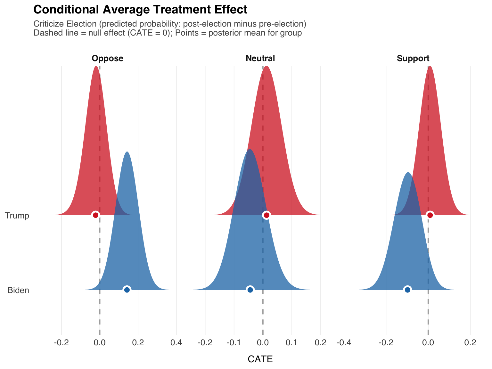
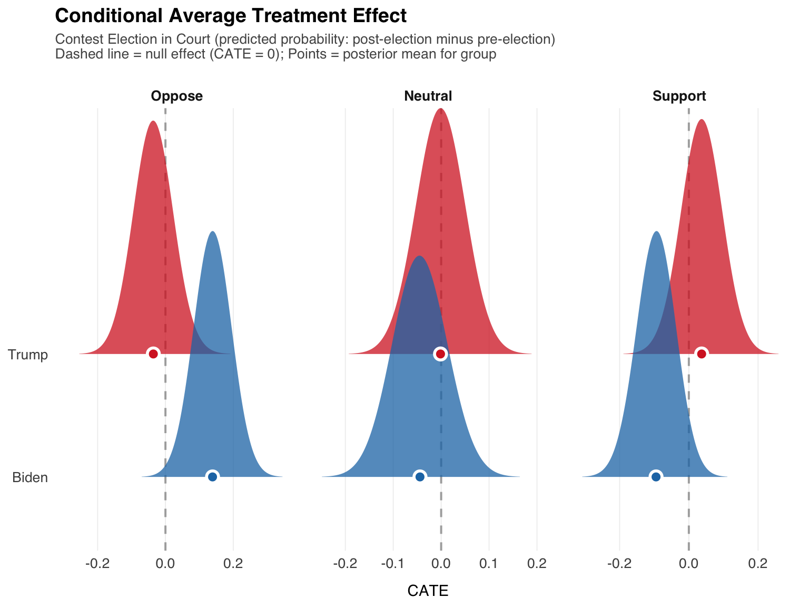
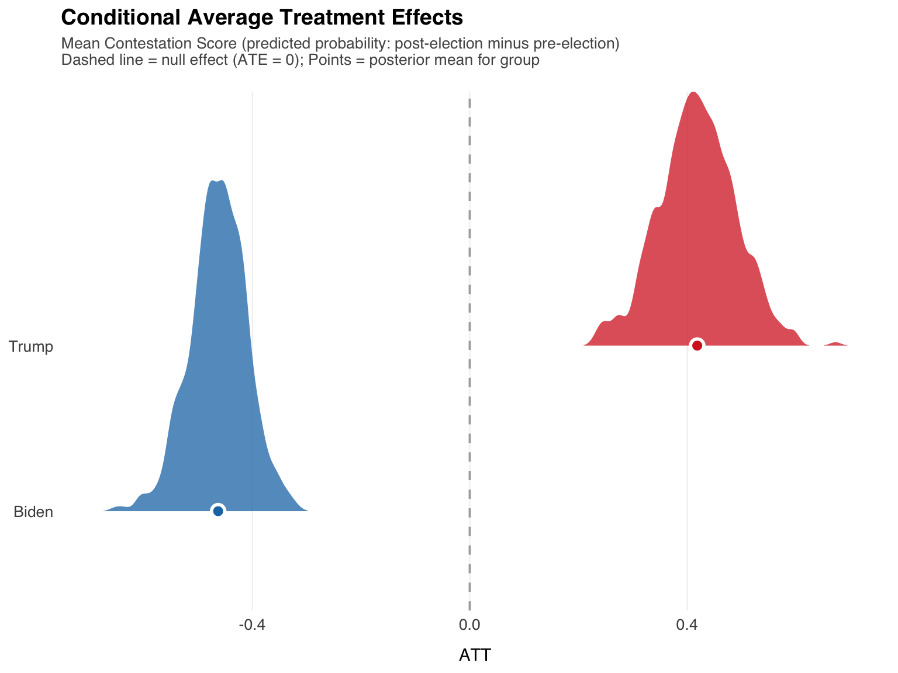

observed_data <- recode_data %>%
mutate(
pre_condition = "actual_treatment",
respondent_id = row_number(),
original_prepost = prepost # Keep original
)
counterfactual_data <- recode_data %>%
mutate(
pre_condition = "hypothetical_treatment",
respondent_id = row_number(),
original_prepost = prepost, # Keep original
prepost = 1 - prepost
)
full_counterfactual_set <- bind_rows(observed_data, counterfactual_data)
preds_draws <- attend_march %>%
add_epred_draws(
newdata = full_counterfactual_set,
ndraws = 500
)Causal Inference, Western Data
Introduction
Several often ignored problems emerge in causal inference using observational data: (1) selection bias into the treatment, (2) heterogeneity in treatment effects across units, and (3) sampling methods that affect whether a unit is actually observed; what is the mechanism that determines whether a unit is selected into the sample? Selection bias reflects the fundamental problem of causal inference in that we are unable to observe a unit in both treatment and control conditions. While this problem extends to randomized experiments, population averaged effects can be reliably estimated because – unlike observational data – knowledge of the treatment assignment assignment allows for the accurate estimation of average treatment effects. For observational data, population averaged effects may be confounded by unobserved variables that influence both treatment assignment and outcome, \(y\).
If there exists heterogeneity in treatment effects across units, a single estimated treatment effect may not accurately reflect differences across subpopulations. In our case, interest is in estimating the change from pre-election period to post-election on support for electoral contestation behaviors, \(y\). The average treatment effect is the average difference in \(y\) between the post-election and pre-election periods,
\[ \text{ATE} = \mathbb{E}[Y_i(1)] - \mathbb{E}[Y_i(0)] \tag{1}\]
However, if treatment effects vary across subpopulations – say Trump voters versus Biden voters and/or something else – the average treatment effect within each subgroup differs. Let \(j\) index these groups (e.g., \(j = 1\) for Trump, \(j = 0\) for Biden)
\[ \text{ATE}_{j} = \mathbb{E}[Y_{ij}(1)] - \mathbb{E}[Y_{ij}(0)] \tag{2}\]
If the treatment effect across different subgroups, the conditional average treatment effect (CATE), the average treatment effect (ATE) is simply the average weighted by frequency effects for the subgroup.s When the distance between ?@eq-cate and ?@eq-atej increases – that is, heterogeneity; a considerable difference in treatment effects, a “winner-loser” effect – Equation 1 does not accurately capture treatment effects.
The third issue, population inference requires knowledge of how the sample units were collected. When units are sampled proportional to that of the broader population, one can adjust for sampling error. Sampling weights are used to readjust for imbalances brought about by random sampling or non-random sampling designs.
Relevance to the Western States Data
- seems relevant to our data, particularly 2020 election data, because treatment assignment – exposure to pre-election versus post-election period – may be confounded by unobserved variables that also affect support for electoral contestation behavior. We have imbalanced exposure to pre and post periods, which may be correlated to unobserved factors. In this case, the assignment mechanism is not entirely random. It’s not clear what contributed to being observed in the pre or post election period. We adjusted for this by g-estimation and inverse probability weighting. This is a bit more challenging for me to piece together with categorical data, so I estimated models using Bayesiam models to piece this together.
- is also relevant, because treatment effects vary across subpopulations – particularly vote choice – which is a winner and loser effect. Even when controlling for this, there is still heterogeneity within Trump voters, indicating that not all Trump voters respond the same way to the loss.
- is also relevant, because our data are imbalanced (we have an oversample of latinos), and data are only observed in five western states.
Model Estimation
I started with an ordered logit model in R, from the brms package. Data are analyzed comparing pre v. post election, to see if support for electoral contestation behavior (here, attending a march) change – for Trump voters versus Biden voters. This is specified to examine whether support for contestation varies depending upon electoral functions; a winner-loser effect.
First, let’s recode the data, then estimate the model in brms. The model without covariates.
The counterfactual for each respondent is not observable – what would happen to those assigned to the post-election if they were instead assigned to the pre-election and vice-versa. So, what I do is first, estimate the model. Then, create two versions of the data; each dataset can be thought of as a population. In one version, the data is simply the observed data, in the second version, the pre-post variable is flipped for everyone. So, in the second dataset, everyone who was in the pre-election is put in the pre-election and those in the post-election are recoded as post-election. Then, I pass these datasets to the models – which too are distributions, the posterior distributions of the parameters – to generate predictions. From here, the different posterior predictive values constitute what-if scenarios – e.g. everyone in the dataset is and it’s then fairly simple to calculate different treatment effects. Together these are the steps involved in the g-computation framework which we’ve been using. It involves fitting a model to the observed data – the ordered or multinomial logit or linear regression – and then simulating potential outcomes where every individual is in every treatment condition.
By setting it up in this way – creating a copy of the dataset where pre and post are flipped – the treatment effect for every respondent can be calculated (over many simulated draws from the posterior distribution). From here, I can then calculated different types of treatment effects – average treatment effects and conditional average treatment effects.

Imbalance
Inclusion into the survey is partially known because we have an oversample of Latino voters…So I thought I’d include additional covariates, which we can similarly average across…

Heterogeneous Effects

Question Wording Effects
preds_draws <- attend_march %>%
add_epred_draws(
newdata = full_counterfactual_set,
ndraws = 500
)
Other Item Analysis
The remaining items – flag burning, court challenges, election recounts, criticizing the election – are:
Flag Burning

Ballot Recounts

Criticize Eleciton

Contest Election in Court

Average Contestation Scores
